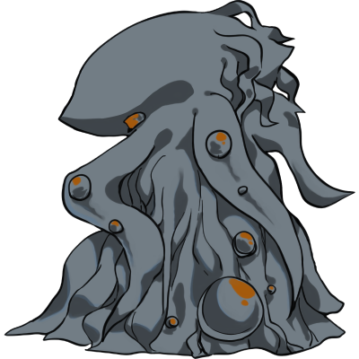

ゾス＝オムモグ
マレウス・モンストロルム P.186
コマサイズ：W2×H3
HP：90 MP：35
DEX：12
装甲：10ポイント
行動方針：総統方面に向かって進行、道中の探索者に攻撃を行いながら進む。〈移動〉と〈攻撃〉を同時に行う。
ゾス＝オムモグの進行
ゾス＝オムモグは、総統閣下の方面に向かって進行を行う。
道中に探索者がいた場合、道中にいる探索者全員に〈回避〉不可の［5d6］ダメージを与える。〝隠密〟状態の探索者のみ攻撃を受けない。
道中脇道に探索者がいた場合、吊るされていなければ攻撃をしながら進む。
移動は［DEX*5］ではなくCCB<=100固定。100を出さなければ基本的に5～6マス移動する（100のときは4マス）。決定的成功を出した場合は7マス移動（1のときは8マス）。
ゾスの移動は少々殺意を高く、あえて探索者たちを引き摺るためのルートを選択してもよい。
ゾスは「クトゥルフの邪神像（原初のアルカナの秘宝）」に引き寄せられているため、〝原初のアルカナ〟を持つ探索者相手にも多少なりとも反応を示すのだ。
ゾス＝オムモグ｜ステータス
STR：40 CON：120
SIZ：60 INT：20
POW：35 DEX：12
移動：4マス/5～6マス/7～8マス 耐久力：90
ダメージボーナス：5d6
装甲：10
備考：攻撃を受けるたびに、耐久を［3］回復
移動の際、探索者を引き潰せるコースを優先的に狙い、近くにいる探索者を最大2名選び、攻撃を行う。
POWが0になっても行動を続ける。
触肢に捕まれた探索者は、次ラウンドのゾス＝オムモグのターンまでに脱出できなかった場合、［5d6］ダメージを受ける。
詳細は「ゾス＝オムモグに捕まる」を参照。
ゾス＝オムモグ｜コピペ用チャットパレット
【装甲10ポイント、攻撃を受けるたびにHPを3ポイント回復、移動は通常3～4マス、DEX成功で5～6マス、決定的成功で7～8マス】
【触肢ダメージは次のゾス＝オムモグの手番より。回避をしない】
sCCB<=100 【移動】
s1d2 【攻撃回数／攻撃方法選択】
sCCB<=90 【触肢】
sCCB<=90 【噛みつき】
-------------
【ダメージロール】
s5d6 【触肢】
s1d6＋3 【噛みつき】
copy completed